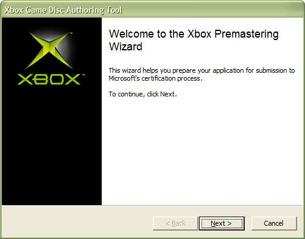
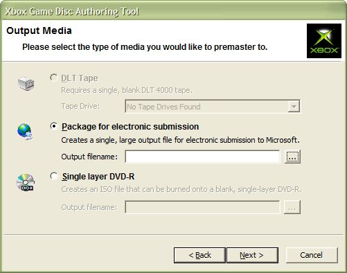

To premaster a game disc onto tape (as either an electronic submission package or as a disc image suitable for burning onto DVD-R media), on either the Tools menu or the tool bar, click Premaster. The Xbox Premastering Wizard appears, as shown here:

Click Next to proceed past the Welcome screen to the Output Media step of the Wizard, pictured here:

The Output Media step enables you to select a destination where XbGameDisc should write your title's files. Select one of the following options:
Note The XbGameDisc tool supports only the DLT 8000 tape drive.
Note The XbGameDisc tool does not burn files directly to DVD-R media; it only produces an ISO file. You will need separate burning software to write the ISO file to disc.
Note Optical media is not acceptable for game certification. The DVD-R option in XbGameDisc gives you an opportunity to test something similar to a final Xbox Game Disc. You should still use the Xbox Game Disc Emulator for testing, though, because DVD-R media has different characteristics than Xbox Game Disc media. A game title running from DVD-R media will have different performance and behavior from the same title running from an Xbox Game Disc.
To begin writing files, click Next. If you selected the Single layer DVD-R option, XbGameDisc prompts you to select either Accurate or Compact layout for the disc before continuing. After it has finished writing the files to their destination, XbGameDisc displays a final closing screen that displays status information about the writing operation. Click Finish to exit the Xbox Premastering Wizard.